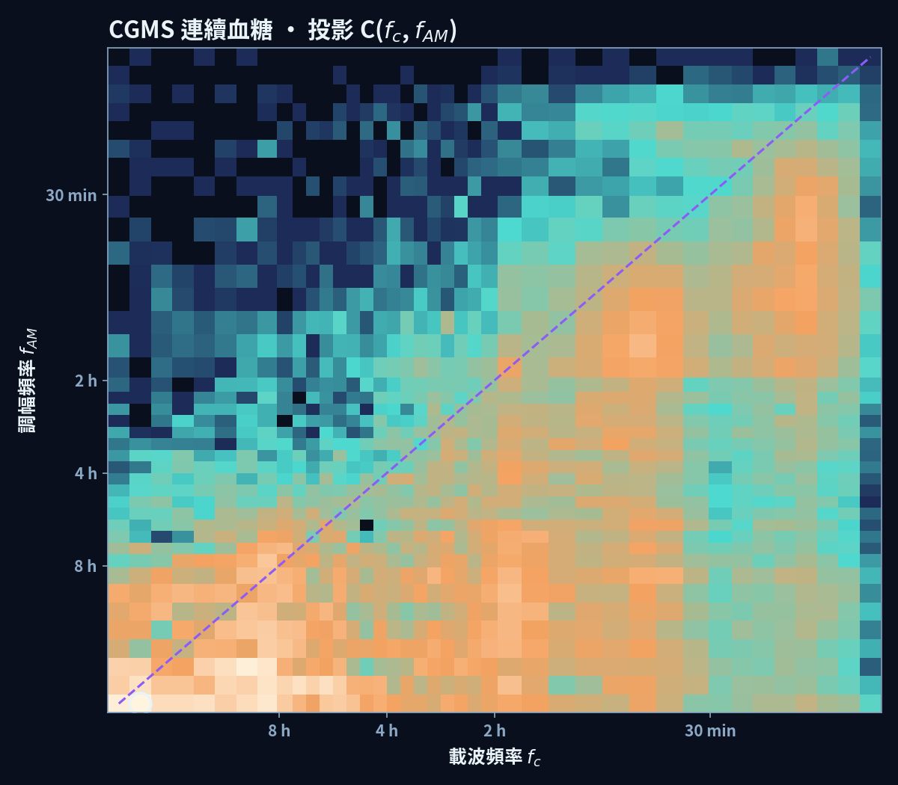

身體訊號不只在振盪，振盪的強弱本身也在振盪。全息希爾伯特頻譜分析 (Holo-Hilbert Spectral Analysis, HHSA) 把這一層「調幅」攤開成一個三維立方體 H(t, fc, fAM)。 下面的動態解說片示範同一套方法如何套用在三種時間尺度完全不同的訊號上，接著逐一用繁體中文解讀每一個立方體。
動態解說片 · 約 2 分 20 秒 · 繁體中文旁白（edge-tts zh-TW-HsiaoChenNeural）與字幕 · 以 HyperFrames 製作。片中每個數字皆出自 phase2/cube/demo_facts.json。開場的三張照片來自 Wikimedia Commons（作者與授權見頁尾）。
Motion explainer · about 2 min 40 s · English narration (edge-tts en-US-AvaNeural) and captions · made with HyperFrames. Same shots and the same numbers as the Chinese edition, all from phase2/cube/demo_facts.json. Opening photos from Wikimedia Commons (credits at the bottom of the page).
三張立方體圖都用同一種畫法，先掌握這五個元素，就能讀懂任何一張。
PhysioNet EEG Motor Movement/Imagery Dataset（EEGMMIDB），受試者 S001、第 2 段（閉眼靜息基線），O1 枕葉電極，61 秒。前處理：平均參考、0.5–40 Hz 帶通、160 → 80 Hz 重取樣、標準化。HHSA：EEMD（100 次集成、雜訊 0.2 SD、seed 42）＋第二層 EMD；2 秒時間窗；0.1–40 Hz 對數 40 格。
| 載波能量（%） | Sub-delta 11.0 · Delta 18.4 · Theta 14.3 · Alpha 31.3 · Beta 24.4 · Gamma 0.7 |
|---|---|
| 最亮格 C 峰值 | fc ≈ 11.2 Hz × fAM ≈ 1.6 Hz |
| Alpha 的調幅來源 | 以頻帶加總，44.6% 落在 < 1 Hz（Sub-delta） |
| 界線上方能量 | 9.1%（不解讀） |
| 3/T 下限 | 0.049 Hz；低於下限的能量 0.0% |
地板上最亮的橫帶落在 8–13 Hz，也就是閉眼時枕葉最典型的阿爾法節律，佔全部載波能量的 31.3%。關鍵在後牆：最亮的一格在載波 11.2 Hz、調幅 1.6 Hz，表示阿爾法波的振幅本身每秒起落一到兩次；若把調幅頻率按頻帶加總，阿爾法載波有 44.6% 的調幅能量來自 1 Hz 以下更慢的節奏。這正是臨床判讀 EEG 時看到的「阿爾法紡錘」一陣強、一陣弱，HHSA 把它從「肉眼印象」變成可以量化的調幅頻率。
Garmin 穿戴裝置原始心搏間期，Session A 424.5 秒（保留 718 拍，中位心率 102 bpm，拍數相對誤差 0.51%）。前處理：IBI 300–2000 ms 篩選、積分觸發重建心搏、4 Hz 三次樣條心搏序列。HHSA 參數同上；10 秒時間窗；頻帶 VLF 0.0033–0.04、LF 0.04–0.15、HF 0.15–0.4、VHF 0.4–2 Hz。
| 載波能量（%） | VLF 17.2 · LF 43.8 · HF 30.4 · VHF 8.6 |
|---|---|
| 調幅來源 | LF ← VLF 77.0% · HF ← VLF 57.3% |
| 第二段 Session B | LF 47.5% · LF ← VLF 78.1% · HF ← VLF 57.5%（兩段結果相近） |
| 3/T 下限 | 0.0071 Hz；21.8% 能量低於下限（Session B 20.8%） |
| 界線上方能量 | 10.3%（不解讀） |
地板顯示心搏序列的能量以 LF（0.04–0.15 Hz）最多，其次是與呼吸相關的 HF。後牆告訴我們更進一步的事：LF 與 HF 振盪的強弱，主要隨 VLF（數十秒到數分鐘一次）的慢節奏起落，兩次獨立紀錄的比例幾乎一樣（77.0% vs 78.1%）。生理上，這可能對應呼吸型態、姿勢或自主神經張力的緩慢變化，但這是假設，不是本資料能證明的結論。
最重要的限制：七分鐘的紀錄，3/T 約 0.007 Hz，而 VLF 調幅本身就落在這附近，有兩成多的能量在解析不到的範圍。因此「VLF 主導調幅」只能算方向性的觀察；要確認，需要更長的紀錄（例如 24 小時 Holter）。

去識別化個案（經當事人同意展示），13.0 天、3,744 點、每 5 分鐘一點。2 小時時間窗；頻帶以週期定義：晝夜 24–8 h、超晝夜 8–4 h、餐相關 4–2 h、餐後 2 h–30 min、快速代謝 30–10 min。
| 載波能量（%） | 晝夜 28.5 · 超晝夜 18.5 · 餐相關 16.3 · 餐後 23.6 · 快速代謝 13.0 |
|---|---|
| 調幅來源 | 超晝夜 ← 晝夜 72.9% · 餐相關 ← 晝夜 49.0% · 餐後 ← 晝夜 33.7% · 快速代謝 ← 餐後 41.4% |
| 最亮格 C 峰值 | 載波週期 ≈ 19.5 h × 調幅週期 ≈ 22.4 h（貼近界線） |
| 界線上方能量 | 19.8%（不解讀） |
| 3/T 下限 | 0.0096 cph（週期約 104 h）；低於下限的能量 0.0% |
地板上最亮的是晝夜節律（28.5%），其次是餐後 2 小時到 30 分鐘的波動（23.6%）。後牆顯示一個有臨床意義的結構：超晝夜（4–8 小時）波動的大小，有 72.9% 跟著晝夜節律起落；餐相關與餐後的波動也有相當比例受晝夜節律調變。白話地說，同一個人的血糖起伏「有多大」並不是整天固定，而是有一天的節奏，例如白天進食時段與夜間的差異。
但這張圖也是最好的反例教材：最亮的一格（晝夜 × 晝夜）緊貼紫色界線（僅在其下方一格），而且有將近兩成能量在界線上方。這一角是分解方法本身的副產物，不能解讀成「晝夜節律在調變自己」。
片中第 4 格用的是答案已知的合成 AM-FM 訊號（載波 0.35–0.65 Hz、調幅 0.03–0.07 Hz，300 秒）。在 30 個時間窗中，目前流程在 25 個（83.3%）找回正確的 (fc, fAM) 位置，未達預設的 90% 目標；失誤集中在記錄頭尾與調幅頻率方向。這也是為什麼上面三個示範都只陳述「方向性」的觀察。詳見臨床示範與方法學。
所有數字由研究室分析流程產生：run_eeg_cube.py（EEG 立方體）、run_cubes.py（CGM、HRV、合成）、demo_facts.py（所有引用數字）、render_cubes_3d.py（本頁的三維圖與旋轉影片）。這些程式與個案原始資料目前尚未收錄於本公開網站；學術用途的重現需求請聯絡研究室。